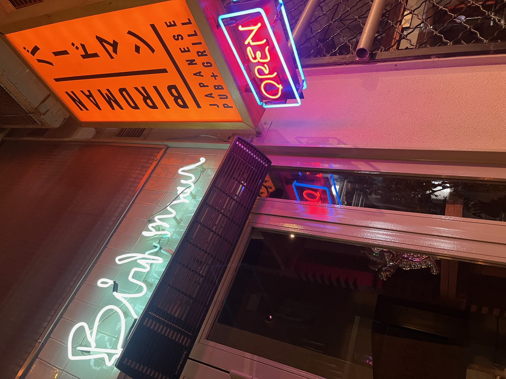
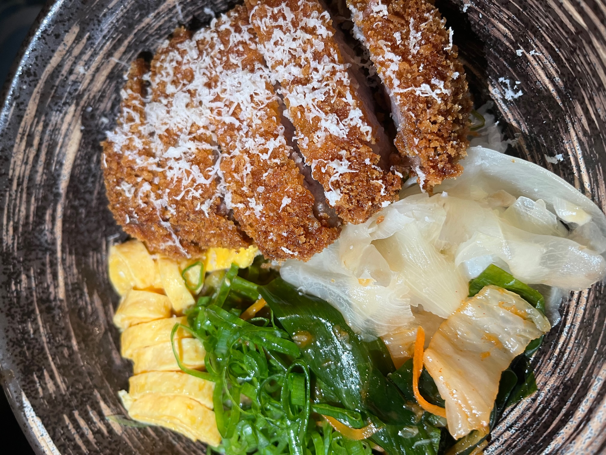
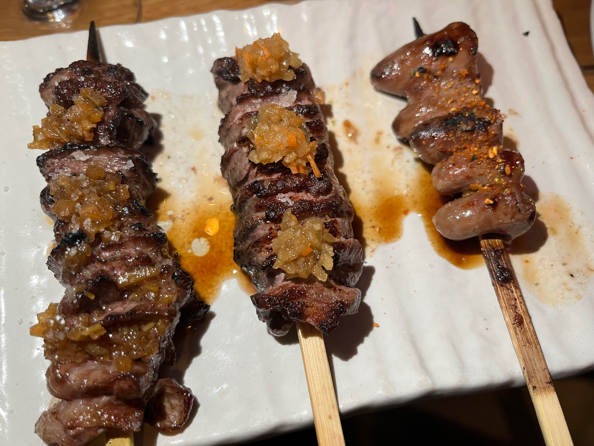

Εκλεπτυσμένη ιαπωνική κουζίνα στο κέντρο της Αθήνας
Ατμόσφαιρα
4.8/5
Εξυπηρέτηση
5/5
Φαγητό
5/5
Value
Money
5
4.5/5
Ανακαλύψαμε πρόσφατα μια πραγματικά εξαιρετική Yakitoria (yaki είναι ψήσιμο στα ιαπωνικά!) το Birdamn στο κέντρο της Αθήνας, επί της οδού Βουλής συγκεκριμένα, η οποία μας άφησε μια σφαιρικά τρομερή εντύπωση
Απο το χώρο, την περιοχή, τους πελάτες του ίδιους μέχρι τις γεύσεις και τα ποτά βρίκαμε τους εαυτούς μας να το συζητάμε για μέρες με τη παρέα μας!

Ατμόσφαιρα:
Κατ' αρχάς η ευρεία περιοχή βρίθει απο μέρη για φαγητό ώς συνέπεια ο χώρος έχει πολύ κόσμο, πολύ ενέργεια και πολύ και καλό φαγητό!
Το ίδιο το Birdman προσφέρει εξωτερικά και εσωτερικά τραπέζια αλλά και booths ώστε να μπορεί κανείς να δεί τη παρασκευή και ψήσιμο του φαγητού ή να απολάυσει ένα δροσερό κοκτέιλ στο ανοιχτό μπαρ.
Ο χώρος εκπέμπει καθαριότητα και φρεσκάδα και το design είναι κομψό συνάμα οικείο. Χαλαρή μουσική, όμορφος χαμηλός φωτισμός σε χαλαρώνουν και προβάλουν αυτό που έχει πραγματικά σημασία, το φαγητό.
Εξυπηρέτηση:
Τα παιδιά που μας εξυπηρέτησαν ήταν ευχάριστα, βοηθητικά και γνώστες του μενού.
Υπήρχε ακόμη και sommelier ώστε να μας κατευθύνει στην επιλογή ποτού.
Συνολικά, το προσωπικό είχε τη διάθεση να βελτιστοποιήσει την εμπειρία μας χωρίς όμως να γίνεται καθόλου παρεμβατικό, το οποίο είναι μια λεπτή ισορροπία.
Φαγητό:
Όπως, είαπμε το Birdman είναι Yakitoria και είδικεύεται συνεπώς σε grilling κρεάτων και κοπών.
Το Birdman προσδίδει ιδιαίτερη προσοχή στο κρέας. Προσφέρει κοπές διάφορων εισηγένων ποικιλιών,
γνήσιες ιαπωνικές συνταγές για να το πλαισιώνουν και μια γκάμα ιαπωνικών ουίσκι διατίθενται για να το συνοδεύσουν. Με άλλα λόγια το κρέας και η παρασκευή του είναι ο
πρωταγωνιστής της εμπειρίας. Τα πιάτα που επιλέξαμε ακολουθούν ακριβώς αυτή τη λογική.

Birdman tataki:
Buta don:
Momo Negima:
μπούτι κοτόπουλο,chutney λεμονιού, yuzu kosho
Wagyu Karub:
brisket flat celery vinaigrette
Kamo:
στήθος πάπιας, apple wafu
Kokoro:

Τελικές σκέψεις:
Το Birdman είναι ένα απο τα διαμάντια του κέντρου, έχει ξεκάθαρα μια καλοστημμένη κουζίνα αλλά και οργάνωση με προσοχή στη λεπτομέρια και έμφαση στην εμπειρία του πελάτη.
Το προτείνουμε ανεπιφύλακτα ως έναν κορυφαίο πρέσβη της ιαπωνικής και ασιάτικης κουζίνας στην Αθήνα και χαιρόμαστε να βλέπουμε μαγαζιά με ιδιαίτερο χαρακτήρα και θέση στην εστίαση.
Side-notes
Πρίν πας πρέπει να κάνεις κράτηση, ειδάλλως θα βρείς πολύ δύσκολα να καθίσεις. Επίσης, η τιμή ανά πιάτο είναι πιο τσιμπημένη σε σχέση με το μέσο μαγαζί, το οποίο είναι φυσιολογικό αν σκεφτεί κάνεις
τα σχετικά κόστη, απο την πρώτη ύλη ως το προσωπικό και το χώρο, απλά δίνουμε ένα heads up!
Αν θέλεις να δείς περισσότερο υλικό για το birdman, ρώτησε μας ή δες εδώ!
Αν θέλεις να δείς περισσότερο υλικό για το birdman, ρώτησε μας ή δες εδώ!